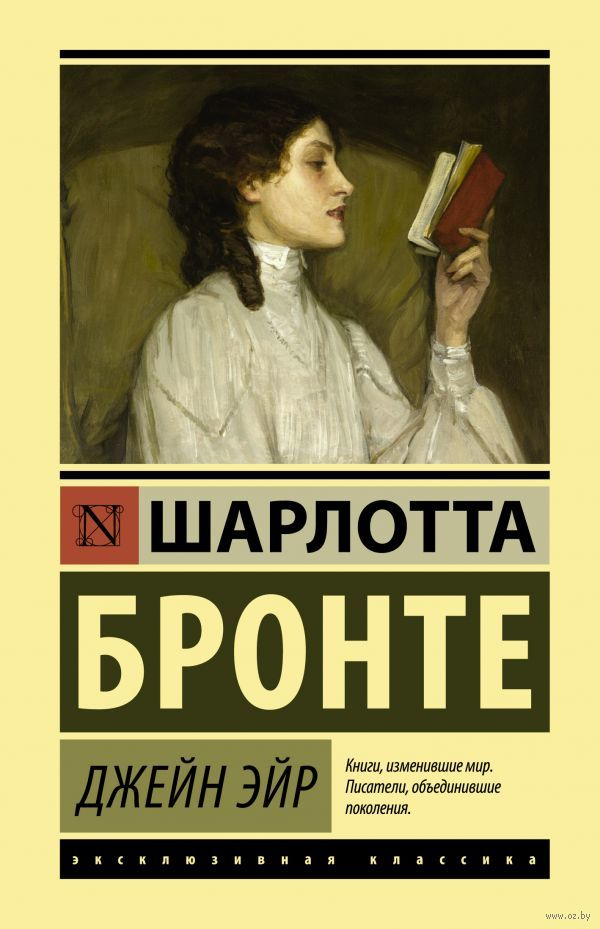

МОИ УВЛЕЧЕНИЯ
Книги
С самого детства я люблю читать. Раньше мне нравились детективы, сейчас же я больше по романам. Вот 3 мои любимые книги:

Музыка
Каждый день слушаю музыку. У меня есть 2 любимые группы: the neighbourgood и twenty one pilots.


Занятия спортом
Занятия спортом приносят мне большое удовольствие. Я стараюсь заниматься 2 раза в неделю. Раньше любила ходить в зал, а сейчас на пилатес или стречинг.